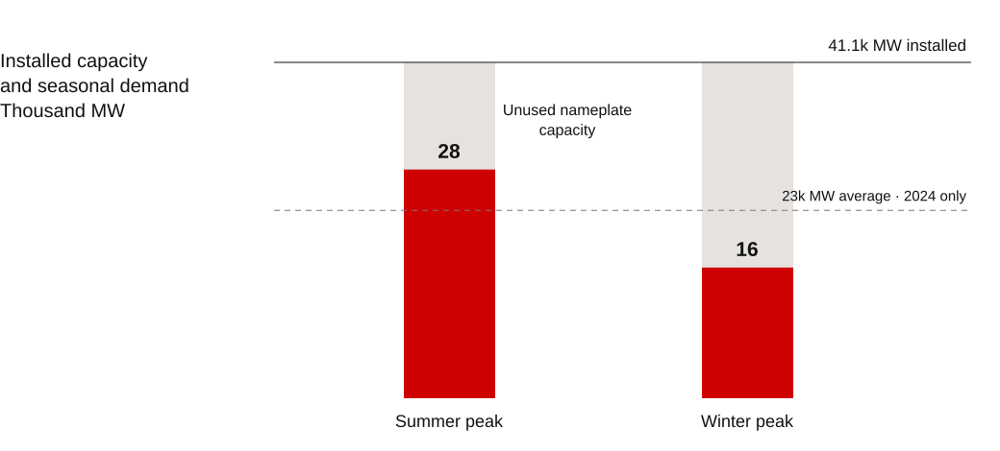

Imagine hiring a driver who must stay with you all day, even if you barely use the car. You pay them just for being available, with fuel paid separately when the car moves. This arrangement sounds costly, and it illustrates how Pakistan’s capacity payments for Independent Power Producers (IPPs) work. note
Capacity payments are payments made to power plants simply for being available, even when their electricity isn’t needed. While intended to ensure stable power access, these contracts have saddled Pakistan with about Rs. 1.9 trillion in annual capacity payments, weighing down the power sector and making electricity more expensive for everyone. Let’s break down how this system emerged, why it’s so costly, and what steps can help ease the burden. The FY26 determination was Rs. 1.941 trillion; the CY2026 projection was Rs. 1.923 trillion. The November 2026 proposal put CY2027 payments at Rs. 1.914–1.962 trillion across scenarios; these are projections, not payments already made. [20][31][32]
How Capacity Payments Became Pakistan’s Financial Burden
Understanding Capacity Payments
Capacity payments cover costs for power plants to remain operational, regardless of whether they generate electricity. They include:
- Fixed Availability Payments: A guaranteed sum for plants’ readiness to produce power.
- Fixed Operating Costs: Operation and maintenance, insurance and other fixed obligations. Fuel is reimbursed separately through energy charges. [0]note
- Return on Equity: Fixed returns to investors, ensuring profitability.
- Debt Servicing: Coverage for loans, which are often dollar-denominated and worsen as the rupee depreciates.
These payments were meant to encourage private investment in energy, ensuring Pakistan had enough electricity capacity. However, with demand falling short of projections, Pakistan now pays billions annually for unused capacity.
The Role of Growth Projections and Overcapacity
In 2015, Pakistan projected rapid economic and population growth, spurring the launch of new energy projects, especially under the China-Pakistan Economic Corridor (CPEC). However, these growth expectations didn’t materialize as anticipated. Economic slowdowns, coupled with the switch to renewable and captive power by industries, led to lower demand from the national grid. [0]note
Since 2015, Pakistan’s utility-scale installed capacity has grown by about 64%, to 41,121 MW, while served system peaks have remained broadly flat since FY22. Summer peaks were around 28,000 MW and winter peaks around 16,000 MW in FY25, leaving a significant surplus of installed capacity. [1][2] As a result, Pakistan continues paying for plants even when their electricity is not needed, with capacity payments accounting for a major part of the burden. note
Installed capacity versus seasonal demand
Utility-scale capacity: FY25. Served system peaks: approximately 28 GW / 16 GW.

Source: Renewables First / NEPRA; Energy Series (2024)
Updated to FY25 for installed capacity and served seasonal peaks. The dashed 23,000 MW average-demand line is 2024 edition data, not updated. Served peaks differ from NEPRA’s computed demand above 33,000 MW. Nameplate capacity is not continuously dispatchable spare power. [2][9][0]
A roof full of panels can lower a family’s grid purchases immediately. The contracts behind the grid adjust much more slowly. If the same fixed bill must be recovered from fewer units sold, the cost attached to each remaining unit rises. That creates a difficult feedback loop: higher tariffs encourage more consumers to reduce their grid purchases, leaving fewer units over which to spread the fixed cost. [110]
Fewer units can carry the same fixed bill
Illustrative fixed-cost recovery, with the annual fixed bill held constant.
Source: Dark Matter illustration of fixed-cost recovery
Illustration, not observed data or a forecast. Index = 100 × 100 ÷ units sold. A 20% fall in sales raises fixed cost per unit by 25% only if fixed costs are unchanged. Fuel savings, taxes, tariff design and changes to contracts are excluded. [110]
Managing that feedback loop requires both cheaper energy and a fair way to pay for the shared system. The illustration keeps fixed costs unchanged to isolate the effect. In practice, contract renegotiation, lower fuel costs, new demand and the way tariffs recover network costs all influence the final bill. Solar generation can also supply demand that would never have been affordable on the grid. Its growth should not automatically be counted as an equal loss of utility sales. [110]
How the Exchange Rate Adds to the Burden
Many capacity-payment obligations are dollar-linked, meaning Pakistan’s energy costs rise with the rupee’s devaluation. Two exchange-rate scenarios illustrate the effect:
This currency-linked payment structure exacerbates Pakistan’s financial strain, as each rupee lost against the dollar amplifies costs for both the government and consumers.
Breaking Down the Capacity Payment Bill
The current annual bill remains around Rs. 1.9 trillion. [20][31] The 2024 breakdown of the Rs. 2.1 trillion bill shows how payments were distributed across different power entities: [0]note
- 15% funded Independent Power Producers (IPPs), particularly those operating under older contracts. [0]note
Capacity shares and payment shares are not the same
Ownership and capacity-payment shares, 2024. Historical comparison, not updated.
Source: Energy Series (2024); PIDE / PPIB.
2024 edition data, not updated. Both ownership and capacity-payment shares retain the 2024 groupings. Current payment totals cannot be allocated using these historical shares. [0]
This structure shows that the burden extends across CPEC projects, other IPPs and government-owned plants. Foreign financing and dollar-linked obligations expose each part of the system to exchange-rate movements. [0]
Why Pakistan Can’t Simply Cut Capacity Payments
Given the massive financial burden, why can’t Pakistan simply cut these payments? Although contracts have since been renegotiated, the obstacles remain rooted in legally binding agreements:
- Sovereign Guarantees: IPP contracts are backed by government guarantees, meaning Pakistan is legally obligated to make these payments regardless of electricity production.
- Investor Confidence: Renegotiating or canceling contracts could deter future investment, as private investors may lose trust in the government’s commitments.
- Legal Ramifications: Canceling these contracts could lead to costly arbitration, similar to past cases where Pakistan faced penalties in international courts.
While renegotiation can offer relief, abrupt or unilateral changes risk damaging Pakistan’s investment reputation, creating long-term repercussions for the power sector. Negotiated revisions have nevertheless moved forward: in March 2025, the Power Division reported Rs. 3.498 trillion in savings over the remaining lives of revised or terminated contracts. [37][38]
Potential Solutions to Ease the Capacity Payment Burden
While renegotiating IPP contracts may be challenging, there are several ways Pakistan can address the capacity payment burden:
- Debt Restructuring for CPEC Projects: China has invested heavily in Pakistan’s energy projects, with approximately $15 billion in power debt in the 2024 estimate. Extending repayment terms from 10 to 15 years could save $550-750 million annually, reducing electricity costs by Rs. 2.5-3 per unit. Converting dollar-based loans to Chinese currency or local currency could also help stabilize payments. [0]note
- Reforming IPP Contracts: The government could seek to restructure debt with non-CPEC IPPs by extending repayment periods and reducing operating costs. In some cases, renegotiating terms on return on equity could yield minor cost savings without alarming investors. The updated reporting puts estimated annual savings from contract changes at around Rs. 117–137 billion, equivalent to roughly Rs. 1.05–1.23 per unit when spread across 111 TWh of grid sales. [2][39][42] Around Rs. 260 billion in late-payment-interest waivers is a separate one-off gain. [43] note
- Encouraging Domestic Demand Growth: Increasing demand can help utilize the existing capacity and reduce per-unit costs. Possible actions include:
- Residential Demand: Encouraging the use of electric appliances and EVs by rationalizing tariffs.
- Industrial Demand: Offering incentives for industries to shift from gas-fueled captive power to the national grid.
- Expanding Renewable and Localized Power: Switching to renewable sources, such as solar and wind, could reduce reliance on dollar-denominated energy and shift focus to more cost-effective, locally-sourced energy.
Restructuring for a Sustainable Future
Capacity payments are an unavoidable challenge that requires careful, strategic solutions. By exploring debt restructuring options, growing domestic demand, and expanding renewables, Pakistan can begin to manage this roughly Rs. 1.9 trillion annual burden [20][31]. While there’s no quick fix, a measured approach can help make Pakistan’s energy sector more sustainable and less vulnerable to currency and demand fluctuations.
Through prudent policy adjustments and a focus on sustainable energy, Pakistan can begin to reduce its dependence on costly capacity payments, creating a more affordable and resilient power future for all.
Data notes
Updated figures use the latest comparable observations available in the November 2026 update and subsequent source checks, with their reporting dates stated. Figures labelled “2024 edition data, not updated” retain the earlier evidence, which may cover years before 2024. [0][108]
Reporting dates, historical figures and qualifications
- Capacity payments cover fixed availability obligations; fuel reimbursement is an energy charge. The 2024 edition’s driver analogy and payment explanation are retained with that classification corrected. [0]
- FY26’s Rs. 1.941 trillion determination, CY2026’s Rs. 1.923 trillion projection and CY2027’s Rs. 1.914–1.962 trillion projections refer to different periods. They are not all measures of payments for unused plants. [20][31][32]
- 2024 edition data, not updated: the original 23,000 MW average-demand illustration; the 84% capacity-growth / 30% demand-growth comparison; the Rs. 1.05 trillion idle-plant estimate; and the PKR 100/USD versus PKR 300/USD currency illustration. The original Rs. 500 billion conclusion was inconsistent with the chapter’s own total and has been replaced by the updated annual capacity-payment scale. [0]
- 2024 edition data, not updated: ownership/payment shares of 46/17/37% and 49/36/15%; the approximately $15 billion Chinese power debt; and proposed savings of $550–750 million annually or Rs. 2.5–3/unit from extending maturities from ten to fifteen years. No completed reprofiling is confirmed in the update. [0][108]
- Renegotiation savings quoted over remaining contract lives are not annual savings. Rs. 117–137 billion divided by 111 TWh gives the illustrative Rs. 1.05–1.23/unit range; it is not an official tariff reduction. The Rs. 260 billion interest waiver is a one-off amount. [2][39][42][43]
- The original discussion of sovereign guarantees, investor confidence and arbitration remains, while wording has been updated to recognise negotiated revisions and terminations since 2024. [37][38]
- Illustrative scenario: holding the fixed annual cost at 100, selling 100, 90 or 80 units makes fixed cost per unit 1, 1.11 or 1.25. The chart indexes these to 100, 111.1 and 125. It is not a tariff forecast and does not attribute an observed sales decline entirely to solar. [110]
Sources
Primary publications are linked where available; press reports and unverified source claims retain that attribution.
- Salahuddin, Caravan Media / Pakistan and Counting, Energy Series (December 2024).
- Power sector mired in inefficiency: Nepra
- Renewables First: Pakistan Electricity Review 2026
- Discos' performance piles Rs397bn onto circular debt in FY24-25: Nepra
- Power consumers face Rs1.914-1.962 trillion capacity payments burden in CY2027
- Nepra determines power purchase price of Rs3,342.36 billion for FY2025-26
- Power purchase price set at Rs25.98 per unit for next fiscal, down 3.77%
- Govt faced international resistance in renegotiating IPP deals, admits Leghari
- Revised IPP Contracts to Save Rs3.5 Trillion Over 3-20 Years: Power Division
- Cabinet nods 14 renegotiated IPP deals, projecting Rs1.4tr in savings
- Exaggerated benefits of IPP renegotiations - Business - DAWN.COM
- Power Division rejects Nepra’s report, cites Rs780bn circular debt cut
- Supplied Updated Edition, November 2026: figures, sources and unresolved caveats
- Dark Matter, Intelligence Briefing (supplied synthesis).